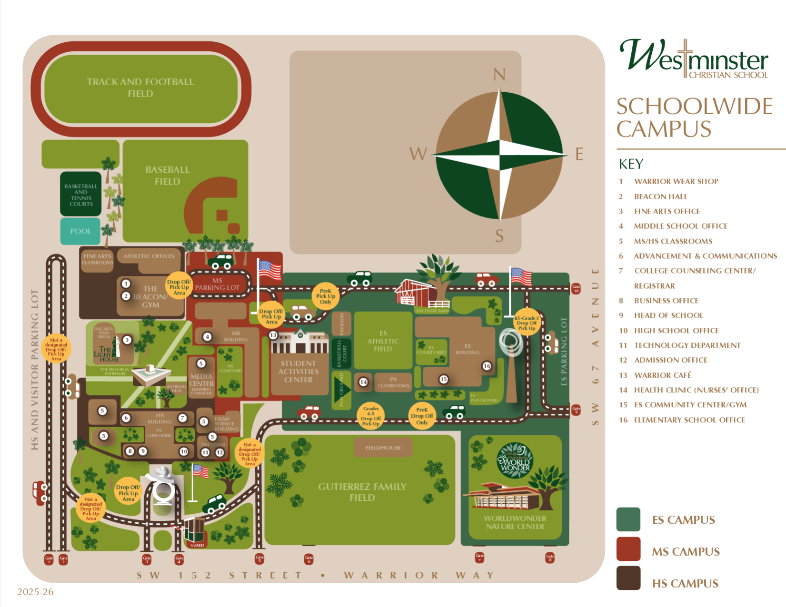

Artificial Intelligence with Purpose is a forward-thinking conference designed to equip Christian educators to pursue excellence in education while remaining firmly grounded in their God-given calling as image-bearers and creators.
Faith-Centered Foundation
As those created by God to create, educators are uniquely positioned to steward emerging technologies like AI with wisdom, discernment, and faith without compromising truth or our Christ-centered mission.
Purposeful AI Integration
Explore how artificial intelligence can be used responsibly and creatively to elevate teaching and learning across PK–12 classrooms. Leave with tools you can use Monday morning.
Hands-On Workshops
Interactive sessions led by practitioners who have implemented AI thoughtfully in Christian school settings as well as AI Education specialists from Microsoft and Pine Crest schools. Practical strategies grounded in pedagogy and mission will be provided.
Forming Ambassadors
We will focus on purposeful innovation that forms students as thoughtful learners, ethical leaders, and ambassadors for Christ prepared to engage tomorrow's world with confidence, compassion, and excellence.
Westminster Christian School
Westminster Christian School is a PK–12 independent Christian school located in Palmetto Bay, Florida. Rooted in a Christ-centered mission and committed to academic excellence, WCS prepares students to be ambassadors for Christ — thinking critically, serving compassionately, and engaging the world with confidence and conviction.
As a community of educators who take seriously our call to be faithful stewards of every resource and opportunity, Westminster is committed to engaging emerging technologies — like artificial intelligence — thoughtfully, biblically, and purposefully.
Visit wcsmiami.org →Why This Conference
AI with Purpose grew out of a simple conviction: Christian educators deserve a space to wrestle honestly with emerging technology — not from fear, but from faith. We believe that those who are called to form the next generation cannot afford to ignore the tools shaping the world our students will inhabit.
This conference brings together Christian educators, AI specialists, and school leaders to ask harder questions, share practical strategies, and leave better equipped to steward technology in a way that honors God and serves students.
Everything you need to know about getting there and getting around.
Westminster Christian School — HS Campus
6855 SW 152nd Street, Palmetto Bay, FL 33157
Free parking available on campus
August 5, 2026 — 8:00 AM to 4:30 PM
Breakfast and lunch provided for all registered attendees
Room assignments are included in your confirmation email after you register for individual sessions.

August 5, 2026 · Westminster Christian School — HS Campus. Click "View Sessions" on a breakout row to explore concurrent options.
The LEAD framework reflects Westminster's commitment to purposeful innovation. We do not pursue technology for its own sake. We learn what is changing, equip educators with practical tools, aspire toward stronger learning experiences, and disciple students with wisdom, integrity, and Christ-centered purpose.
Browse sessions below, then register here — spaces are limited.
Foundations & Confidence
Build confidence with foundational AI concepts and strategies that every educator can apply immediately.
Tools & Practice
Equip yourself with practical AI tools and classroom-ready strategies to enhance teaching and learning.
Vision & Innovation
Explore forward-thinking possibilities for AI in education and cast vision for what could be in your school community.
Faith & Formation
Integrate AI thoughtfully into your Christ-centered mission, stewarding technology to shape students of wisdom and character.
Christian educators and AI practitioners leading our sessions.
11:25 AM – 1:00 PM · Breezeway / SAC · Lunch is served — stop by the tables, connect with partners, and explore what's possible.
The Westminster Christian School educators and leaders behind Artificial Intelligence with Purpose.
Get in Touch
Have questions about the conference, sessions, or registration? We'd love to hear from you.
- Email: conference@wcsmiami.org
- School: Westminster Christian School
- Location: 6855 SW 152nd Street, Palmetto Bay, FL 33157
- Conference Date: August 5, 2026
The body of Christ is stronger when we build together. AI with Purpose brings educators from across Christian schools to share, grow, and sharpen one another.
Elementary Educators
PK–5 teachers discovering how AI can enrich foundational learning and lighten the load.
Middle School Teachers
Grades 6–8 educators navigating AI alongside students at a critical developmental stage.
High School Faculty
Secondary teachers preparing students to engage AI thoughtfully in an increasingly complex world.
School Leaders
Administrators and curriculum directors building school-wide AI strategies grounded in mission.
"Iron sharpens iron, and one person sharpens another." —Proverbs 27:17
Brothers and sisters, come ready to connect, share what's working, and learn from those walking the same road. Make 2026–2027 the best school year yet!